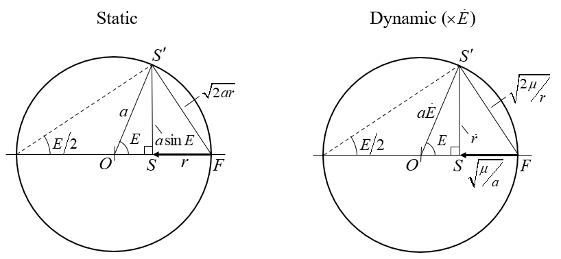
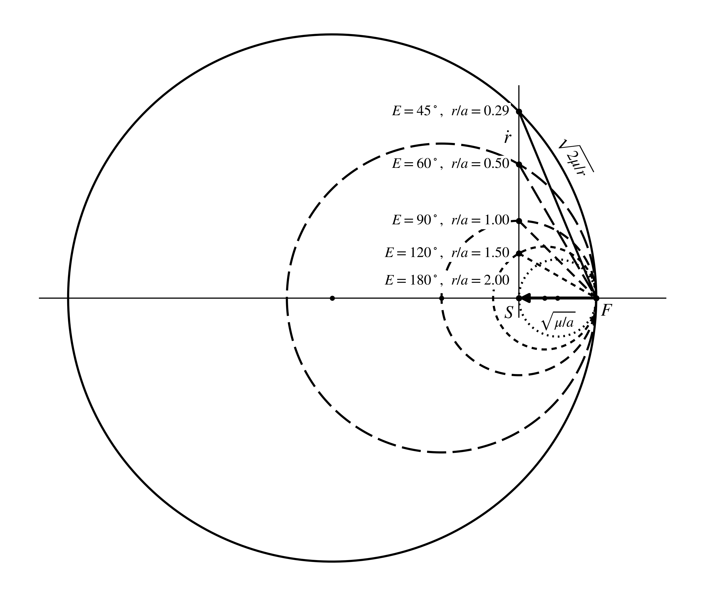
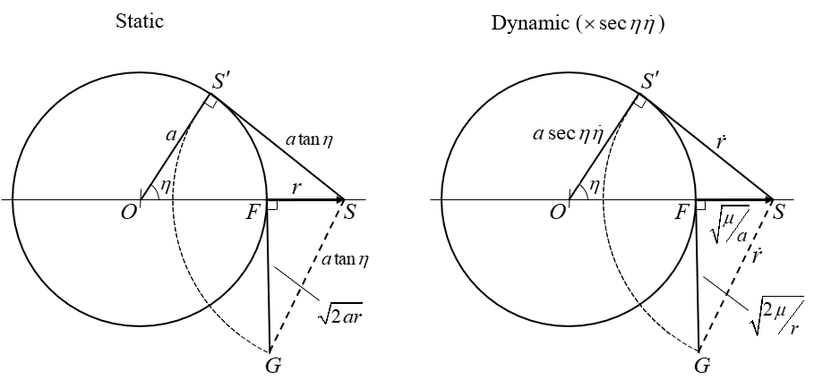
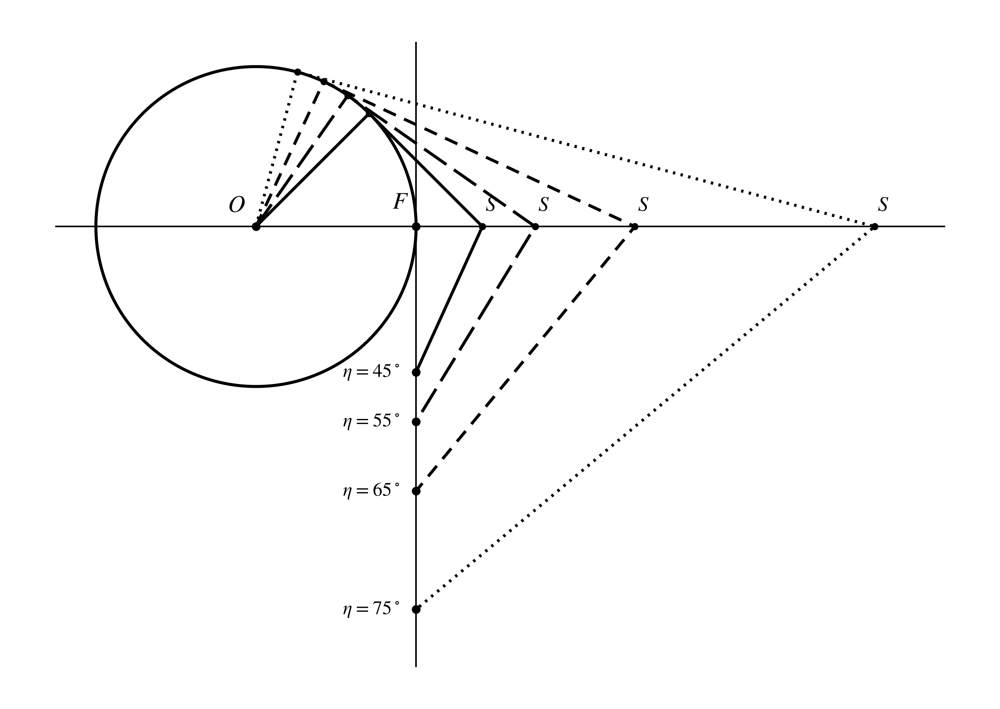
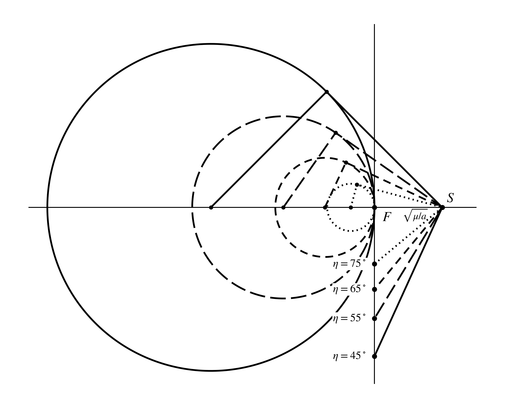
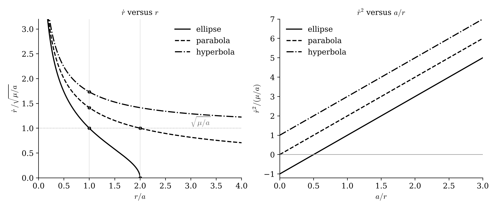
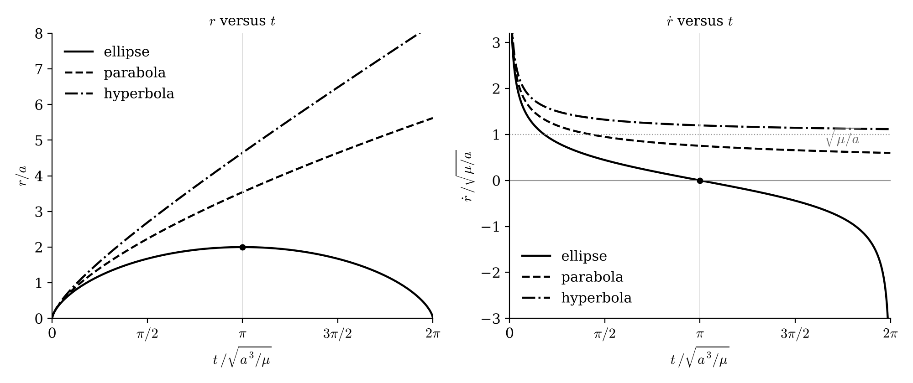
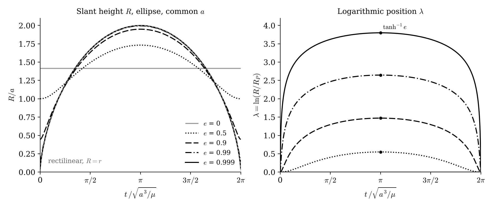
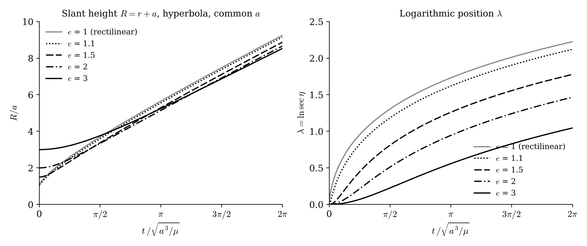

Time
Time in the conical frame: static and dynamic models
Each orbit page ends with its own time equation: Kepler's equation for the ellipse (Eq. E-13), the trigonometric (η) form for the hyperbola (Eq. H-14), and Barker's equation for the parabola (Eq. P-10). The Rectilinear page gives the e = 1 forms of all three. This page sets them side by side and develops the geometric models that go with them, first static, then dynamic.
The approach starts with the simpler rectilinear models and then adds what the general orbit needs. The rectilinear case keeps the energy and the timing of the general orbit and drops only the angular momentum, so its models carry everything about time in the simplest geometry. These models were introduced in AAS 05-354.1 The hyperbolic models on this page are a simpler form than the ones in that paper. The last sections return to the conical frame itself: the slant height R, the circumference C′ of the cone's circle, and the logarithmic position variable of the engrXiv paper.2
Energy With and Without Angular Momentum
Written as an energy equation, vis-viva for a general orbit is
with the upper sign for the ellipse and the lower sign for the hyperbola. The middle term is h2/(2r2), the centrifugal term of the familiar effective potential. Setting p = 0 removes it and leaves the rectilinear case at the same energy:
Each form of Eq. T-2 is the Pythagorean relation for a right triangle, with sides √(μ/a), √(2μ/r) and ṙ. In the ellipse √(2μ/r) is the hypotenuse, and in the hyperbola ṙ is. The models below draw these triangles. Putting the angular momentum back adds one leg, √(ap), which scales to h/r and lies perpendicular to the planar triangle. The general orbit is then the rectilinear model plus an orthogonal piece, not a different problem.
The Time Equations Side by Side
| Orbit | Anomaly | Radius | Time | Eqs. |
|---|---|---|---|---|
| Ellipse | \(E\) | \(r = a - ae\cos E\) | \(\sqrt{\mu/a}\;t = aE - ae\sin E\) | E-12, E-13 |
| Parabola | \(D = \tan(\theta/2)\) | \(r = p(1 + D^{2})/2\) | \(2\sqrt{\mu/p^{3}}\;t = D + D^{3}/3\) | P-10 |
| Hyperbola | \(\eta\) | \(r = ae\sec\eta - a\) | \(\sqrt{\mu/a}\;t = ae\tan\eta - a\ln(\sec\eta + \tan\eta)\) | H-13, H-14 |
| Rectilinear ellipse | \(E\) | \(r = a(1 - \cos E)\) | \(\sqrt{\mu/a^{3}}\;t = E - \sin E\) | R-1, R-2 |
| Rectilinear parabola | none | \(r^{3} = 9\mu t^{2}/2\) | \(\tfrac{\sqrt{2}}{3}\,r^{3/2} = \sqrt{\mu}\;t\) | R-12 |
| Rectilinear hyperbola | \(\eta\) | \(r = a(\sec\eta - 1)\) | \(\sqrt{\mu/a^{3}}\;t = \tan\eta - \ln(\sec\eta + \tan\eta)\) | R-13 |
Time is measured from periapsis passage in every case. Differentiating each time equation and using its radius equation gives a rate for the anomaly. In every case the rate times r is a constant:
for the ellipse, hyperbola and parabola. These hold for every eccentricity, not only for e = 1. For the hyperbola, the derivative of the right side of Eq. H-14 is a sec η (e sec η − 1) η̇ = r sec η η̇, and the parabola follows the same way from Eq. P-10. The first two are Eq. R-3 and the hyperbolic partner noted with Eq. R-14. The ellipse and the hyperbola share the same constant, √(μ/a), the speed on a circle of radius a.
Eq. T-3 also gives the factor that turns each static model below into its dynamic model. For the ellipse it is Ė = √(μ/a)/r, and for the hyperbola it is sec η η̇, the same expression. The hyperbolic factor is the time derivative of ln(sec η + tan η), the logarithmic term of Eq. H-14, so it needs no new symbol.
Static and Dynamic Models
The static model is a figure built from lengths: a, r and the anomaly. The dynamic model is the same figure with every length multiplied by the factor from Eq. T-3. Because every line gets the same factor, each dynamic triangle is similar to its static triangle. All the angles carry over, the anomaly included, and only the scale changes. The factor changes continuously with r, so the scale of the dynamic model changes continuously with time.
The rectilinear ellipse
With e = 1 the general static model reverts to a single circle of radius a centered at O, with F at the right-hand end of the line of apsides. The point S′ on the circle is at eccentric anomaly E, and S is its foot on the line of apsides. Triangle S′SF has
| Line | Static | Dynamic (× Ė) |
|---|---|---|
| \(SF\) | \(r = a(1 - \cos E)\) | \(\sqrt{\mu/a}\), constant |
| \(S'S\) | \(a\sin E\) | \(\dot{r}\) |
| \(S'F\) | \(\sqrt{2ar}\) | \(\sqrt{2\mu/r}\) |
| \(OS'\) | \(a\) | \(a\dot{E} = \sqrt{\mu a}/r\) |
The static triangle closes as
and multiplying through by Ė2 gives the elliptic form of Eq. T-2. The base SF becomes the constant √(μ/a), which is why F is the right-hand end of both the line of apsides and the constant vector. It is also where Kepler's equation comes from when it is derived by integration.

Figure T-1 shows both models at E = 70°. The two panels are drawn the same size, so they show that the triangles are similar but not how the scale changes. The circle radius in the dynamic model is aĖ = √(μa)/r, so it is not fixed. It grows without limit near periapsis and falls to √(μ/a)/2 at apoapsis. Figure T-2 shows that change.
Holding the base SF fixed at √(μ/a) keeps F, S and the vertical through S in place. Only S′ moves, up and down that vertical at height ṙ. Each circle passes through F, with its center on the line of apsides at a distance √(μa)/r from F. The dynamic model is therefore a family of circles through F that grow and shrink as the motion runs.

Figure T-2 draws the family at E = 45°, 60°, 90°, 120° and 180°. The dots on the axis are the circle centers, the point O carried into the dynamic picture. In the static model O stays fixed and S moves. In the dynamic model F and S are fixed, and O slides along the axis: it starts far out near periapsis, passes through S at E = 90°, where r = a and ṙ = √(μ/a), and ends halfway to F at apoapsis, where the circle just touches the vertical at S and ṙ = 0. The angle at F is 90° − E/2.
The rectilinear hyperbola
The hyperbolic static model uses the same circle of radius a about O, but S lies outside it, at OS = r + a = a sec η. Angles increase counterclockwise, and η is the angle at O to the tangent point S′, so S′S is the tangent from the circumference out to S, with length a tan η. The static triangle closes as
Comparing Eqs. T-4 and T-5, the anomaly term and √(2ar) trade places, just as ṙ and √(2μ/r) trade places in Eq. T-2. Swinging the tangent S′S about S down to the perpendicular at F locates G, so that triangle FGS is a right triangle with FG = √(2ar). Multiplying every line by sec η η̇ gives the dynamic model:
| Line | Static | Dynamic (× sec η η̇) |
|---|---|---|
| \(FS\) | \(r = a(\sec\eta - 1)\) | \(\sqrt{\mu/a}\), constant |
| \(S'S\), \(GS\) | \(a\tan\eta\) | \(\dot{r}\) |
| \(FG\) | \(\sqrt{2ar}\) | \(\sqrt{2\mu/r}\) |
| \(OS'\) | \(a\) | \(a\sec\eta\,\dot{\eta} = \sqrt{\mu a}/r\) |
Triangle FGS then shows the hyperbolic form of Eq. T-2, and triangle OS′S gives the same result directly. This replaces the more complex dynamic hyperbolic model of the original paper, whose complexity came from using η̇ alone as the multiplier.

As η goes to 90°, sec η η̇ goes to zero. The circle and √(2μ/r) shrink away, and ṙ falls onto the constant √(μ/a), the hyperbolic excess velocity.


Figure T-4 draws the static and dynamic families at η = 45°, 55°, 65° and 75°, with matching line styles so that each static triangle can be paired with its similar dynamic triangle. In the static panel the circle stays fixed at radius a. As η grows, S moves outward and the point G of Fig. T-3 drops down the perpendicular at F. In the dynamic panel FS stays fixed at √(μ/a), which amounts to measuring the static figure in units of r. The circle radius is then a/r in those units, so a larger r gives a smaller circle. Shrinking each triangle by its own factor reverses the order: the 75° triangle is the largest in the static panel and the smallest in the dynamic one, where its circle has nearly closed in on F.
One circle radius, two energies
In both dynamic models the circle passes through F and has the same radius,
where √(μa) is the angular momentum per unit mass of the circular orbit of radius a. What separates the two energies is where S sits. For the ellipse S lies inside the circle and ṙ is a half-chord. For the hyperbola S lies outside and ṙ is a tangent. Near periapsis the elliptic circles grow without limit, and as r grows the hyperbolic circles shrink into F, leaving only the fixed base. Between them, the rectilinear parabola has no √(μ/a) term at all, and its triangle collapses to the single line ṙ = √(2μ/r).
The three rectilinear cases can be compared directly by giving the ellipse and the hyperbola the same a. The parabola has no a, but its ṙ can still be measured in units of √(μ/a), and with r in units of a the three velocities are
for the ellipse, parabola and hyperbola. At any r the parabolic ṙ2 is the mean of the other two, and the parabolic ṙ is the √(2μ/r) line already present in both dynamic models: the hypotenuse S′F of the elliptic triangle and the leg FG of the hyperbolic one.

In the left panel of Fig. T-5 the three curves merge as r goes to zero, where the 2μ/r term dominates. At r = a the values are 1, √2 and √3 times √(μ/a). The ellipse reaches zero at apoapsis, r = 2a, where the parabola has slowed to exactly √(μ/a). The hyperbola levels off toward √(μ/a) and the parabola toward zero. The right panel plots ṙ2 against a/r, which turns Eq. T-7 into three parallel lines of slope 2. The energy ∓μ/(2a) sets only the intercept, −1, 0 or +1, and the elliptic line crosses zero at a/r = 1/2, the apoapsis.
Fig. T-5 covers only the outbound leg. Plotting against time instead uses the rectilinear time equations of Table T-1, with t in units of √(a3/μ), so that one period of the rectilinear ellipse runs from 0 to 2π.

In the left panel of Fig. T-6 all three leave F together. The ellipse rises to 2a at t = π√(a3/μ) and falls back to F at the end of the period. The parabola keeps climbing as t2/3, and the hyperbola straightens into a line of slope √(μ/a). The right panel shows the return leg, which Fig. T-5 cannot: the elliptic ṙ passes through zero at apoapsis, turns negative, and grows without limit on the fall back to F. The hyperbolic ṙ levels off toward √(μ/a) and the parabolic ṙ sinks toward zero.
The Conical Frame: R, C′ and λ
The Energy section noted that putting the angular momentum back adds a leg √(ap) perpendicular to the rectilinear triangle. That leg and r make a right triangle whose hypotenuse is the slant height R from the cone apex, the Bridge Relation of the Elliptical page:
for the ellipse on the 45° cone. The hyperbola, cut parallel to the cone axis, has the simpler R = r + a (Hyperbolic page), so Ṙ = ṙ. With p = 0 both reduce to the rectilinear frame, where the cone breathes with r (Rectilinear page).
Circumference
The circle of the cone through the satellite has radius R′ = R sin Φc and circumference
so C′ follows R, not r. In the rectilinear case C′ = kr collapses to zero at each periapsis. With p > 0 it never collapses: on the 45° cone the ellipse swings it between the values set by RP = a√(2(1 − e)) and RA = a√(2(1 + e)). For the hyperbola, cos Φc = 1/e gives C′ = 2πR√(e2 − 1)/e, which vanishes at e = 1, where the cone has closed onto its axis.
The logarithmic position variable
Applying Gauss's law to the cone and accumulating the flux from periapsis gives a flux proportional to ln(R/RP) (paper, Eqs. 15 and 18). Since C′ is proportional to R, the same variable is the logarithm of the circumference ratio:
For the ellipse, with R2 = a2[(1 − e cos E)2 + (1 − e2)],
which runs from zero at periapsis to tanh−1e at apoapsis, and the accumulated flux is Ψ = 2πμ sin Φh λ.

The left panel of Fig. T-7 shows R, and so C′, over one period for several eccentricities with the same a, and so the same period. The circular orbit does not breathe at all: R stays at a√2. As e grows the swing widens, and by e = 0.999 the curve is almost the rectilinear cycloid R = r. The right panel shows λ. For high e it climbs steeply out of periapsis and then levels off, so equal steps in λ fall close together in r near periapsis, where a trajectory approaching the vertical changes fastest. That is the basis of the paper's positioning scheme, which uses λ as a second convergence check beside Kepler's equation. For a lofted trajectory with e = 0.996 and a loft angle of 85trajectory with e = 0.996 and a flight path angle of 85°, placing nodesdeg;, placing nodes in the R frame cut the time-of-flight interpolation error at the target by about a factor of five.
The hyperbolic counterpart
The hyperbola gives a simpler result. Eq. H-13 is r = ae sec η − a, so R = r + a = ae sec η, and at periapsis RP = ae. Then
The hyperbola thus carries two logarithms side by side: ln sec η, the position variable, and ln(sec η + tan η), the time term of Eq. H-14, whose rate sec η η̇ is the dynamic factor of Table T-3. In the rectilinear static model of Fig. T-3, OS = r + a is R itself and the circle radius a is RP, so λ = ln(OS/OS′) can be read directly from the figure.

Fig. T-8 draws the hyperbolic family with the same a and time scale as Fig. T-7. R starts at ae and soon runs parallel for all e, at the common excess speed √(μ/a). Here the rectilinear case stays finite: RP = a at e = 1, so λ is well behaved. On the 45° elliptic cone, by contrast, RP goes to zero as e → 1 and the apoapsis value tanh−1e grows without limit. The difference comes from the cone, not the energy. The paper derives the flux meaning of λ for the 45° elliptic cone only. Whether ln sec η carries the same flux meaning on the hyperbolic cone is still open.
Still to Come
This page is in progress. Planned additions are the dynamic models for the general (p > 0) ellipse and hyperbola, built by adding the √(ap) leg to the rectilinear models above; a time construction for the parabola; side-by-side figures of the elliptic and hyperbolic families with matching line styles; the flux meaning of λ = ln sec η on the hyperbolic cone; and the parabolic counterpart of λ.